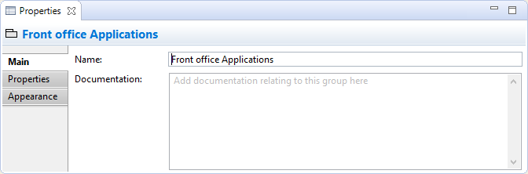
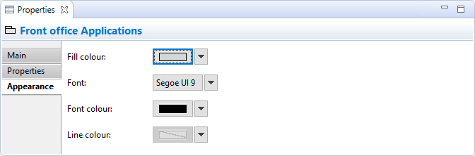

Sélectionner un groupe dans une vue signifie que vous pouvez modifier ou consulter les propriétés suivantes dans la fenêtre des propriétés.
L'onglet principal
Modification des propriétés "principales" pour un groupe
| Nom: | Le nom du groupe |
| Documentation: | Un endroit pour saisir de la documentation utilisateur en relation avec le groupe |
L'onglet propriétés
Pour plus d'informations concernant la création et la gestion des propriétés utilisateur, voir propriétés utilisateur.
L'onglet apparence
Modification des propriétés "Apparence" pour un groupe
| Couleur de fond: | Définit la couleur de fond du groupe. Le bouton "Défaut" définit la couleur de fond comme étant celle définie par défaut. |
| Police de caractères: | Définit la police de caractères utilisée pour le texte dans le groupe. Le bouton "Défaut" définit la police de caractères selon le réglage par défaut défini dans les préférences. |
| Couleur de la police de caractères: | Définit la couleur de la police de caractères utilisée pour le texte dans le groupe. Le bouton "Défaut" définit la couleur de la police de caractères conformément aux réglages par défaut. |
| Couleur de la ligne: | Définit la couleur de la ligne utilisée pour dessiner le groupe. Le bouton "Défaut" définit la couleur de la ligne selon les réglages par défaut. Si ceci est désactivé, c'est parce que les couleurs de ligne sont dérivées de la couleur de fond de l'élément, comme indiqué dans les préférences. |